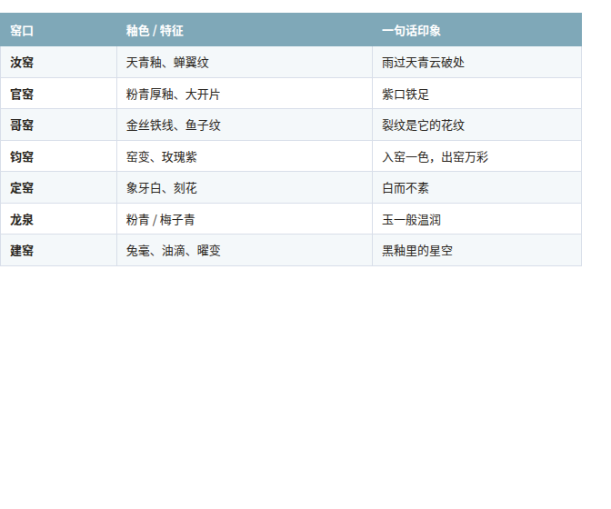
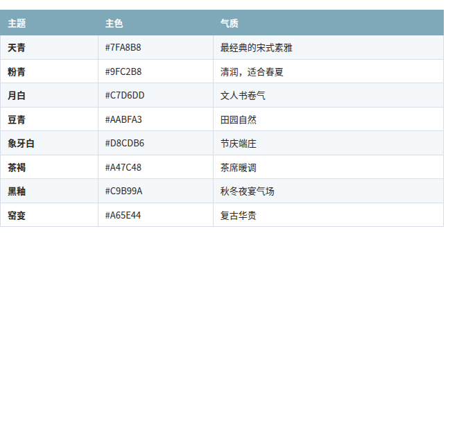

如果让一个中国人选一种"最高级的审美"，很多人会想到宋瓷。
它不靠繁复取胜：一只汝窑天青釉瓶，通体素色，只在釉面留着细如蝉翼的开片；一只建窑兔毫盏，黑釉之上浮着银丝般的纹路，像深夜里的星河。宋人把"克制"做到了极致——极简的造型、素雅的釉色、含蓄的表达，这就是一千年前的东方极简主义。
而今天，我想把这份美学变成能直接用起来的东西：一个 AI 技能，和一张会变色的封面模板。
做这件事的起点，是一个很朴素的想法：宋瓷的审美这么高，能不能让 AI 也学会？
宋瓷恰好是"特征高度可描述"的美学——它的每个窑口、每种釉色，都有明确的视觉词汇：

这些词不只是"形容词"，它们是可以直接写进 AI 提示词的指令。模型在海量文物照片上训练过，你说"汝窑天青釉"，它知道要低饱和的淡青；你说"冰裂纹"，它知道要细密的开片纹理。
结论：宋瓷不仅审美高，而且"可转译"——这正是把它做成 AI 技能的前提。
"Skill"可以理解成给 AI 装的一段专业知识插件。装了它，AI 就掌握了完整的宋瓷美学体系，随时调用。
这个 Skill 内置了两大能力：
核心是一条公式：
提示词 = 窑口釉色 + 器型 + 釉面特征 + 展示场景 + 光线 + 摄影质感
比如还原一件汝窑梅瓶：
ru ware porcelain vase, meiping form, sky-blue glaze, jade-like muted tone,
subtle cicada-wing crackle, dim museum display, soft top spotlight,
dark backdrop, product photography, photorealistic, 8k
还有三套场景语法——博物馆级（研究还原）、文人氛围（美学创作）、细节微距（纹理研究），以及一条防翻车的负面词：negative: vivid colors, painted floral decoration, glossy plastic look...（防止天青跑成艳蓝、防止跑成明清彩瓷）。
把宋瓷的釉色直接转译成设计令牌：
有了这套体系，AI 能输出可运行的 HTML 设计系统、CSS 令牌文件，甚至能导入 Figma 的 JSON 令牌。
如果说 Skill 是"地基"，那后面的每一步，都是在验证这套美学能不能落地：
生图提示词研究 → UI 设计语言 → 服装配色方案 → 广告背景 mockup → 小红书模板
其中很有意思的一步是服装配色：用 6 种宋瓷釉色（天青、粉青、月白、黑釉、窑变、象牙白）给同一款新中式套装配色，每种都按"主色/辅助色/点缀色"分配——验证了这套色板跨领域的可复用性。
再到广告背景：月白底配天青产品、深天青底配象牙白产品，验证了"背景退、产品进"的配对法则。
最后，所有这些沉淀，汇成了一个普通人也能直接上手的东西——那个 HTML 模板。
这是全文的重点。这个模板最初是给小红书做的竖版封面，但它的能力远不止于此。
功能一：一个文件，走遍天下
整个模板是单文件自包含的——连图片导出引擎（html2canvas）都内联进了 HTML 里。这意味着：
功能二：全部文字，点哪改哪
卡片里的每一处文字——标题、分类标签、印章字、中间主文案、正文、话题标签、品牌名——都是可编辑的文字区：
功能三：8 种釉色，一键换肤（最亮眼）
底部有一排釉色圆点，点击哪个，整张卡片就变成那个釉色主题：

更聪明的是文字自适应：切到黑釉（深色底），标题、正文、品牌名自动变成浅色，印章变成"金底深字"；切回月白（浅色底），文字又变回深色——深底配浅字、浅底配深字，永远可读。
连左下角的品牌名都会跟着变：切到黑釉，它就变成"黑釉 · HEIYOU"。印章的宽度也随文字增长自动向右锚定、向左延伸，写几个字都自然。
功能四：一键导出 PNG
点「导出 PNG 图片」按钮，直接下载 2 倍分辨率的成品图。更贴心的是：所有虚线框、选中光环、hover 效果在导出时自动隐藏——出来的图干干净净，只有宋瓷边框和你的文字，没有任何"编辑痕迹"。
功能五：5 个场景预设
内置美食、家居、旅行、好物、知识 5 套文案预设，点一下自动填充，适合发不同内容的账号。当然，预设只是帮你起头，所有文字依然可以再改。
小红书（最初的目标场景）：
微信生态（同样好用）：
其他场景：
一句话：它是一张"宋瓷风封皮"，里面放什么内容由你决定——美食、家居、旅行、干货、产品，都不打架。
回头看这条线，其实是一个方法论：
先有审美，后有工具。
宋瓷的美学不是靠堆词汇堆出来的，而是靠"克制"——少即是多，留白即是表达。这份克制最终沉淀成：一条提示词公式、一套设计令牌、一张会变色的封面。
如果你也喜欢这种"雨过天青"的审美，欢迎把这套模板拿过去玩一玩：改改字、点点色板、导出你的一张封面——你会感受到，一千年前的审美，今天依然好用。
本文提到的宋瓷 Skill 与小红书模板均为实际产出物，可通过 CodeBuddy 的「宋瓷」技能包获取体验。